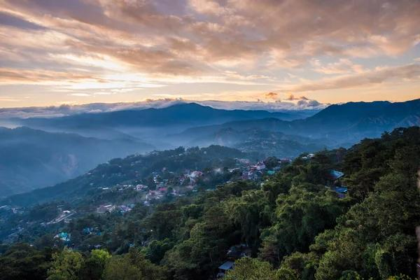
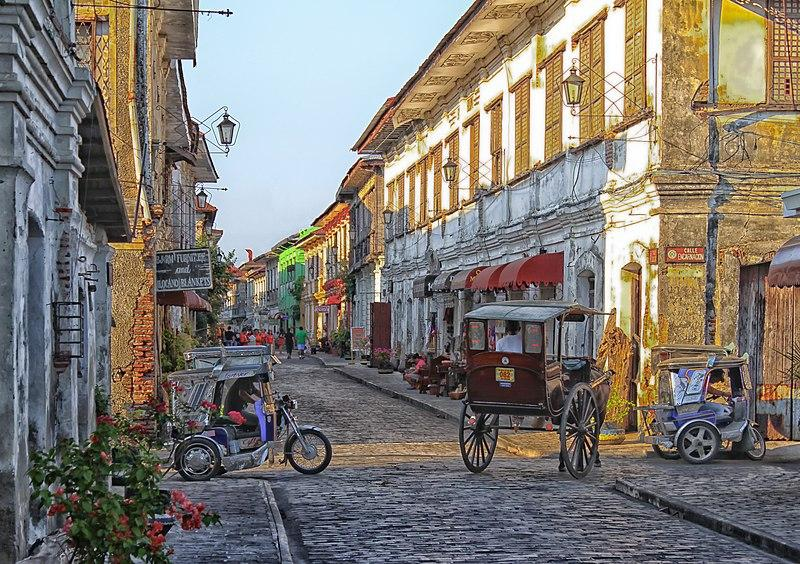
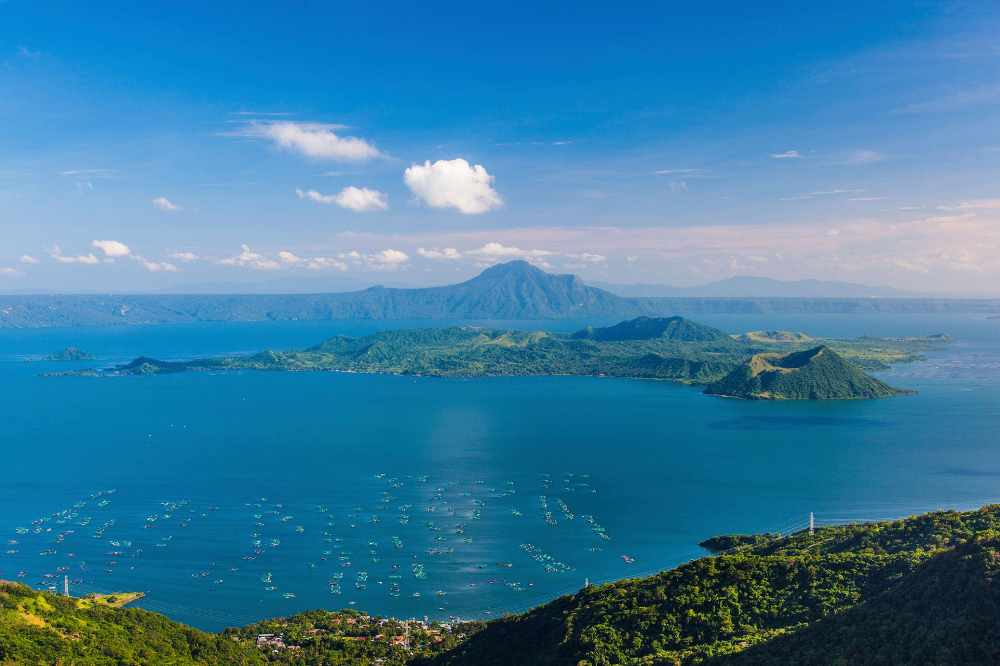

Destinations



Introduce popular places where visitors can travel, relax, and experience Luzon's beauty.
Recommended destinations:
- Baguio City - Known as the Summer Capital of the Philippines because of its cool climate.
- Vigan, Ilocos Sur - Famous for its preserved Spanish colonial architecture.
- Tagaytay, Cavite - Known for its scenic view of Taal Volcano and Lake.
- Baler, Aurora - Popular for surfing and beautiful beaches.
- Legazpi City, Albay - Known for its views of Mayon Volcano.